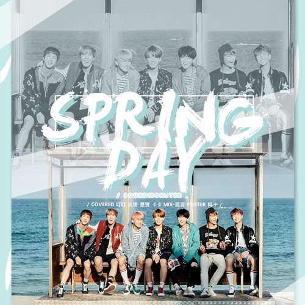
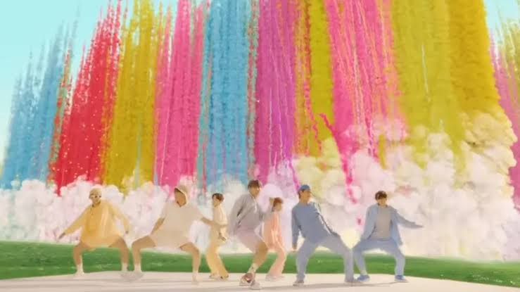
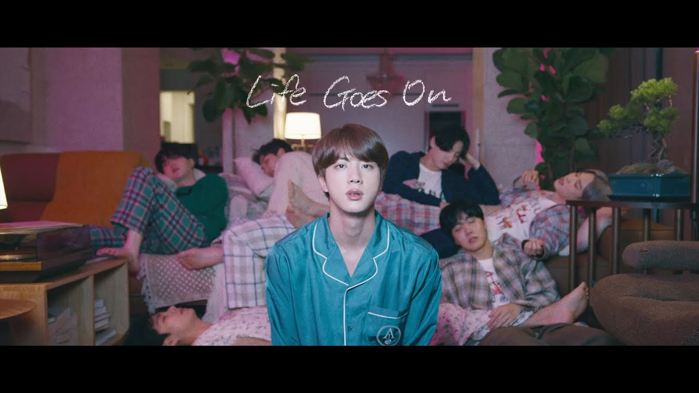
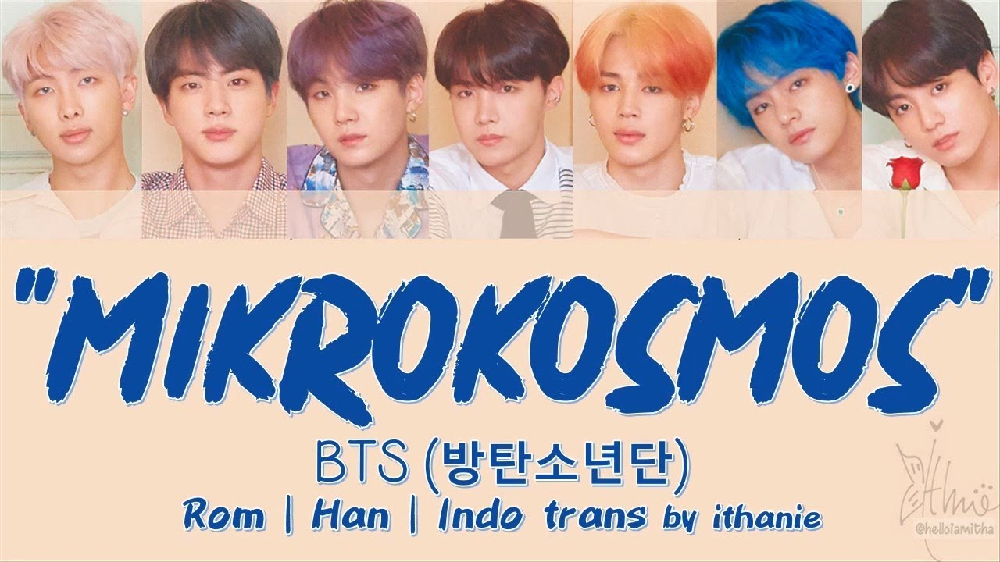

Spring Day

Spring Day adalah lagu yang dinyanyikan oleh BTS.
Lagu ini dirilis pada tahun 2017.
Lagu ini menceritakan tentang kerinduan kepada seseorang.
Spring Day memiliki makna tentang persahabatan dan kehilangan.
Liriknya sangat menyentuh hati.
Musiknya terdengar lembut dan indah.
Lagu ini memberikan suasana yang penuh kenangan.
Banyak penggemar BTS menyukai lagu ini.
Spring Day mengajarkan tentang kesabaran dan harapan.
Lagu ini menjadi salah satu lagu favorit saya.
Dynamite

Dynamite adalah lagu populer dari BTS.
Lagu ini dirilis pada tahun 2020.
Lagu ini menggunakan bahasa Inggris.
Dynamite memiliki irama yang ceria dan menyenangkan.
Lagu ini mengajak pendengar untuk tetap bahagia.
Musiknya cocok untuk menemani aktivitas sehari-hari.
Lagu ini memiliki suasana yang penuh semangat.
Dynamite berhasil menarik perhatian banyak orang.
Lagu ini membuat pendengar ingin ikut menari.
Dynamite menjadi salah satu lagu favorit saya.
Life Goes On

Life Goes On adalah lagu yang dinyanyikan oleh BTS.
Lagu ini dirilis pada tahun 2020.
Lagu ini memiliki makna tentang kehidupan.
Life Goes On mengajarkan kita untuk tetap melangkah.
Lagu ini mengingatkan bahwa masa sulit akan berlalu.
Musiknya terdengar lembut dan menenangkan.
Liriknya memberikan semangat kepada pendengar.
Lagu ini mengandung pesan tentang harapan.
Life Goes On cocok didengarkan saat bersantai.
Lagu ini menjadi salah satu lagu favorit saya.
Yet To Come
Yet To Come adalah lagu dari BTS.
Lagu ini dirilis pada tahun 2022.
Lagu ini menceritakan tentang kenangan dan masa depan.
Yet To Come memiliki pesan bahwa hal terbaik masih menanti.
Lagu ini mengingatkan kita untuk terus bermimpi.
Musiknya terdengar lembut dan penuh makna.
Liriknya memberikan motivasi kepada pendengar.
Lagu ini juga menggambarkan perjalanan karier BTS.
Yet To Come mengajarkan pentingnya memiliki harapan.
Lagu ini menjadi salah satu lagu favorit saya.
Mikrokosmos

Mikrokosmos adalah lagu yang dinyanyikan oleh BTS.
Lagu ini dirilis pada tahun 2019.
Lagu ini memiliki makna tentang keindahan setiap manusia.
Mikrokosmos menggambarkan setiap orang seperti bintang.
Lagu ini mengajarkan kita untuk menghargai diri sendiri.
Musiknya terdengar indah dan menenangkan.
Liriknya memiliki pesan yang sangat mendalam.
Lagu ini memberikan perasaan hangat kepada pendengar.
Mikrokosmos mengingatkan bahwa setiap orang itu berharga.
Lagu ini menjadi salah satu lagu favorit saya.